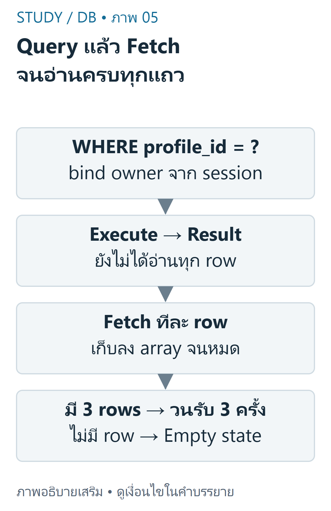
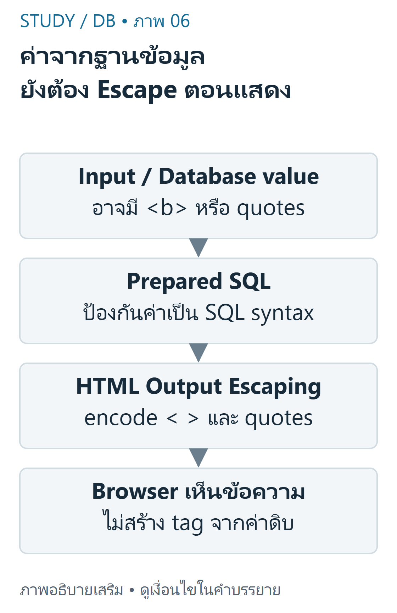

DB 03 — SELECT, mysqli และการแสดงข้อมูล
ใช้ Resume Lab เป็นตัวอย่างหลักจาก DB-Z01 และ DB-S01 หน้า10–13,18–21 แยกข้อมูลที่ query จริงออกจาก array placeholder
เป้าหมายการเรียนรู้
- เขียน SELECT/WHERE/ORDER BY และอ่านผลหลายแถว
- ใช้ mysqli_query และ mysqli_fetch_assoc ตามบทบาทที่ต่างกัน
- แสดงผล HTML อย่างปลอดภัยและจำกัดข้อมูลตามเจ้าของเมื่อเป็นหลายผู้ใช้
SELECT และลำดับผลลัพธ์
SELECT เลือกคอลัมน์และแถวตามเงื่อนไข WHERE; ORDER BY กำหนดลำดับที่ต้องการ ถ้าไม่ระบุ ORDER BY ห้ามถือว่าฐานข้อมูลต้องคืนตามลำดับที่ INSERT หรือ PK เสมอ เมื่อค่าสำหรับ sort เท่ากัน ควรเพิ่มคีย์ที่ไม่ซ้ำเป็น tie-breaker ให้การทดสอบ deterministic
SQL
1SELECT id, skill_name, skill_level2FROM skill3WHERE profile_id = 14ORDER BY id;
สำหรับ3แถวตั้งต้นของ skill ใน DB-Z02 และไม่มีการแก้ไข ผลที่คาดเรียงตาม id คือ
ค่า1ในตัวอย่างนี้คือ profile สาธิต ไม่ใช่สิทธิ์เข้าถึงของผู้ใช้ที่ล็อกอินทุกคน คำสั่ง SQL literal ที่ไม่มี user input เหมาะกับการเริ่มเรียน แต่เมื่อใช้ข้อมูลจาก request ต้องใช้ parameter binding
Query กับ Fetch คนละขั้น
mysqli_query ส่ง SQL ไปยังการเชื่อมต่อ สำหรับ SELECT จะได้ result object เมื่อสำเร็จ ส่วน mysqli_fetch_assoc อ่านหนึ่งแถวเป็น associative array โดยชื่อคอลัมน์เป็น key เมื่ออ่านจนครบจะไม่คืนแถวให้วนต่อ จึงต้องมี loop ถ้าต้องการมากกว่าหนึ่งรายการ

ภาพเขียนเสริม: Query แล้ว Fetch จนอ่านครบทุกแถว — get_result ต้องมี mysqlnd ใน PHP buildภาพเขียนเสริม ตรวจตามบทเรียนและเอกสารเทคนิคอ่านภาพ: mysqli query ส่งคำสั่งและได้ result จากนั้น fetch_assoc อ่านทีละ row จนหมด ถ้าไม่มีแถวแสดง empty state ไม่สร้าง skill ปลอม
ตัวอย่างพื้นฐานนี้ใช้ SQL คงที่กับ fixture หนึ่ง profile; ต้องมี $conn ที่เชื่อมต่อสำเร็จแล้วและเปิด error handling ตามที่ตั้งใจ ไม่ใช่คำสั่งสร้างฐานข้อมูล
PHP
1<?php2$skills = [];3$result = mysqli_query($conn,4 'SELECT id,skill_name,skill_level FROM skill WHERE profile_id=1 ORDER BY id');5while ($row = mysqli_fetch_assoc($result)) {6 $skills[] = $row;7}8echo count($skills); // 3 ในข้อมูลตั้งต้นที่ระบุด้านบน
ถ้าไม่มีแถว $skills จะยังเป็น array ว่างและ countเป็น0 อย่าสับสน0แถวกับ query ที่ล้มเหลว เมื่อเปิด MYSQLI_REPORT_STRICT ข้อผิดพลาด SQL จะเป็น exception ต้องจัดการ error ฝั่งเซิร์ฟเวอร์โดยไม่เปิดเผยรายละเอียดการเชื่อมต่อ
Escape ตามบริบท HTML
HTML escaping เปลี่ยนตัวอักษรพิเศษให้ Browser แสดงเป็นข้อความ ชื่อ skill เช่น <b>SQL</b> ต้องไม่กลายเป็นแท็กเมื่อแสดงเป็นชื่อธรรมดา การ escape HTML ไม่ได้ป้องกัน SQL injection และ prepared statements ไม่ได้ทำหน้าที่ escape HTML แทนกัน

ภาพเขียนเสริม: ค่าจากฐานข้อมูล ยังต้อง Escape ตอนแสดง — ไม่ใช้ HTML encoder แทนทุกบริบทภาพเขียนเสริม ตรวจตามบทเรียนและเอกสารเทคนิคอ่านภาพ: Prepared statement แยกค่าออกจาก SQL แต่ไม่ทำให้ HTML ปลอดภัยอัตโนมัติ ใช้ htmlspecialchars ตามบริบท HTML text หรือ quoted attribute ก่อนส่ง Browser
PHP
1<?php2function h(mixed $value): string {3 return htmlspecialchars((string)$value, ENT_QUOTES | ENT_SUBSTITUTE, 'UTF-8');4}
PHP
1<?php2foreach ($skills as $row) {3 echo '<li>' . h($row['skill_name']) . '</li>';4}
เมื่อ h รับ <img src=x> & จะได้ <img src=x> & เพื่อใส่ในบริบทข้อความ HTML ตัวอย่างนี้ไม่ใช่กฎสำหรับฝังใน JavaScript, CSS หรือ URL ทุกแบบ ซึ่งต้องใช้ encoding/validation ตามบริบทนั้น ๆ
ตัวอย่างต่อยอด: อ่านเฉพาะเจ้าของ
เมื่อมีหลายบัญชี ต้องใช้ profile_id ที่ตรวจจาก session ฝั่งเซิร์ฟเวอร์ ไม่ใช่ใช้ค่า1เสมอหรือเชื่อ hidden input ของผู้ใช้ ฟังก์ชันต่อไปนี้ใช้ prepared SELECT และแสดงวิธีอ่านหลายแถว; ผู้เรียกต้องตรวจ actor ก่อนเรียก
PHP
1<?php2function skills(\mysqli $conn, int $profileId): array {3 $stmt = mysqli_prepare($conn,4 'SELECT id,skill_name,skill_level FROM skill WHERE profile_id=? ORDER BY id');5 mysqli_stmt_bind_param($stmt, 'i', $profileId);6 mysqli_stmt_execute($stmt);7 $result = mysqli_stmt_get_result($stmt); // requires mysqlnd; available in the tested PHP build8 $rows = [];9 while ($row = mysqli_fetch_assoc($result)) {10 $rows[] = $row;11 }12 mysqli_stmt_close($stmt);13 return $rows;14}
ตัวอย่างใช้ mysqli_stmt_get_result ซึ่งต้องมี mysqlnd ใน PHP build ที่ใช้ตรวจมีความสามารถนี้ หากสภาพแวดล้อมไม่มี ให้ใช้ mysqli_stmt_bind_result/fetch ตามรูปแบบใน DB-Z02 แทน อย่าอ้างว่า extension ทุก build เหมือนกัน
ทดสอบและตรวจผล
ทำให้การอ่านข้อมูลพิสูจน์ได้: ตรวจ SQL ในฐานข้อมูลทดลอง ใช้ profile ที่ทราบ จำนวน/ชื่อรายการต้องตรงและเรียงตาม id ทดสอบ profile ที่ไม่มีรายการให้คืน array ว่าง แล้วทดสอบ string ที่มีเครื่องหมายพิเศษเพื่อแยกปัญหา SQL ออกจาก HTML
DB-Z01 ยังมี $skills/$trainings เป็น array ตัวอย่าง งานของนิสิตคือแทนด้วย query จริง ไม่ใช่เพียงเปลี่ยนข้อความ array ให้เหมือนภาพหน้าจอ
เนื้อหาฝึกเขียนและเฉลยต่อไปนี้เรียบเรียงเพื่อการเรียน ไม่ใช่ข้อสอบจริงหรือเฉลยทางการของผู้สอน เว็บไซต์นี้แสดงตัวอย่างแบบ static; ไม่ส่ง SQL, PHP หรือข้อมูลบัญชีไปรันบนเซิร์ฟเวอร์มหาวิทยาลัย
ข้อผิดพลาดที่พบบ่อย
- เรียก fetch แค่ครั้งเดียวแล้วคิดว่ามีแถวเดียวใน DB
- เชื่อว่าลำดับแถวแน่นอนโดยไม่มี ORDER BY
- ใช้ htmlspecialchars แทน parameter binding หรือเอาชื่อ field ที่ไม่ตรงกับผล SELECT
- ไม่จำกัด profile เมื่อมีหลายผู้ใช้ หรือคิดว่า prepared statements ตรวจเจ้าของให้อัตโนมัติ
ฝึกคิดพร้อมเหตุผล
- ข้อ1: SELECT ไม่พบแถวเป็น error เสมอหรือไม่? เฉลย: ไม่ใช่ อาจเป็นผลถูกต้องตาม filter; ต้องแยกจาก SQL exception
- ข้อ2: จะพิสูจน์ว่าใช้ข้อมูลจริงอย่างไร? เฉลย: เปลี่ยนข้อมูลใน disposable DB แล้วอ่านใหม่และตรวจผลเทียบ query ไม่พึ่ง array สาธิต
- ข้อ3: ทำไมต้องมีทั้ง binding และ escaping? เฉลย: binding แยกข้อมูลจากโครงสร้าง SQL ขาเข้า ส่วน escaping ป้องกันการตีความเป็น HTML ขาออก
สรุปทบทวน
- SELECT ส่งคำถาม, fetch อ่านแต่ละแถว และ loop เก็บหลายแถว
- ใช้ ORDER BY พร้อม tie-breaker และตรวจผลว่างอย่างถูกต้อง
- อ่านข้อมูลตามเจ้าของและ escape ให้ตรงบริบท HTML
แหล่งข้อมูลและขอบเขต
DB-S01 หน้า10–13,18–21; DB-Z01 instructions/index.php และ DB-Z02 skills.php. ฟังก์ชันที่เขียนเสริมในบทตรวจด้วย PHP8.4/mysqli บน disposable MariaDB;ไม่ใช่ผลรันบน Angsila. อ้างอิง mysqli_fetch_assoc, mysqli_stmt_get_result และ htmlspecialchars.
บัญชีแหล่งข้อมูลและข้อจำกัด ระบุเลขหน้ากายภาพของ PDF ทุกครั้ง เอกสารต้นฉบับที่ผู้ใช้ให้เป็นไฟล์ local-only และไม่ได้เผยแพร่ซ้ำ ภาพและโจทย์ฝึกเป็นงานเขียนเสริมที่แยกจากต้นฉบับ
โหมดฝึกทำโจทย์
โจทย์ฝึกที่ผู้เขียนจัดทำ ไม่ใช่ข้อสอบจริงหรือเฉลยทางการ; การประเมินตนเองไม่รวมในคะแนนอัตโนมัติ
โจทย์ฝึกที่ผู้เขียนจัดทำ ไม่ใช่ข้อสอบจริง: SELECTที่ต้องการเฉพาะskillของownerควรมีอะไร?
- A. ORDER BY password
- B. WHERE 1=1แทนowner
- C. SELECTทุกคนแล้วซ่อนด้วยCSS
- D. WHERE profile_id=? ที่bindจากsessionowner
ทบทวนเนื้อหาที่เกี่ยวข้องอ่านเฉลยและแนวประเมิน
WHERE profile_id=? ที่bindจากsessionowner
จำกัดข้อมูลฝั่งDB ไม่ส่งของคนอื่นให้client
โจทย์ฝึกที่ผู้เขียนจัดทำ ไม่ใช่ข้อสอบจริง: mysqli_queryกับmysqli_fetch_assocต่างกันอย่างไร?
- A. queryส่งSQL;fetchอ่านrowจากresultทีละแถว
- B. ทั้งคู่ทำINSERTเสมอ
- C. fetchเปิดBrowser
- D. queryescapeHTMLให้แล้ว
ทบทวนเนื้อหาที่เกี่ยวข้องอ่านเฉลยและแนวประเมิน
queryส่งSQL;fetchอ่านrowจากresultทีละแถว
queryสำเร็จไม่เท่ากับดึงครบทุกrow
โจทย์ฝึกที่ผู้เขียนจัดทำ ไม่ใช่ข้อสอบจริง: ค่าskillชื่อ<script>ควรแสดงเป็นtextอย่างไรในHTML?
- A. นำไปechoดิบ
- B. htmlspecialcharsตามบริบท
- C. ลบWHERE
- D. ใช้gitadd
ทบทวนเนื้อหาที่เกี่ยวข้องอ่านเฉลยและแนวประเมิน
htmlspecialcharsตามบริบท
escapingoutputกันtagถูกตีความ ไม่ใช่parameterbinding
โจทย์ฝึกที่ผู้เขียนจัดทำ ไม่ใช่ข้อสอบจริง: ถ้าต้องการลำดับrowsที่แน่นอนควรทำอะไร?
- A. อาศัยลำดับINSERTเสมอ
- B. อาศัยPKโดยไม่ORDERBYทุกกรณี
- C. ORDER BYพร้อมtiekeyที่กำหนดชัด
- D. เรียงตามCSS
ทบทวนเนื้อหาที่เกี่ยวข้องอ่านเฉลยและแนวประเมิน
ORDER BYพร้อมtiekeyที่กำหนดชัด
SQLไม่รับรองลำดับเมื่อไม่มีORDERBY
โจทย์ฝึกที่ผู้เขียนจัดทำ ไม่ใช่ข้อสอบจริง: fetch_assocครั้งเดียวเพียงพอสำหรับหลายskillsหรือไม่?
- A. เพียงพอเพราะได้ทุกrowsอัตโนมัติ
- B. ต้องเรียกDROPก่อน
- C. ได้arrayของทุกtable
- D. ไม่ ต้องวนอ่านจนหมด
ทบทวนเนื้อหาที่เกี่ยวข้องอ่านเฉลยและแนวประเมิน
ไม่ ต้องวนอ่านจนหมด
หนึ่งfetchคืนหนึ่งrowหรือend ต้องloop
โจทย์ฝึกที่ผู้เขียนจัดทำ ไม่ใช่ข้อสอบจริง: เขียนpseudocodeอ่านทุกskillแล้วจัดempty state
ทบทวนเนื้อหาที่เกี่ยวข้องอ่านเฉลยและแนวประเมิน
ประเมินคำอธิบายตามเกณฑ์ทีละข้อ; โจทย์นี้ไม่มีคะแนนอัตโนมัติ
- queryownerชัด
- loopfetchจนหมด
- แยกemptyกับerror
คลังข้อสอบฝึกเพิ่มเติม
โจทย์ที่ผู้เขียนจัดทำ ไม่ใช่ข้อสอบจริง การประเมินตนเองไม่รวมคะแนน
โจทย์ฝึกที่ผู้เขียนจัดทำ ไม่ใช่ข้อสอบจริง: SELECTที่ต้องการเฉพาะskillของownerควรมีอะไร?
- A. ORDER BY password
- B. WHERE 1=1แทนowner
- C. SELECTทุกคนแล้วซ่อนด้วยCSS
- D. WHERE profile_id=? ที่bindจากsessionowner
ทบทวนเนื้อหาที่เกี่ยวข้องอ่านเฉลยและแนวประเมิน
WHERE profile_id=? ที่bindจากsessionowner
จำกัดข้อมูลฝั่งDB ไม่ส่งของคนอื่นให้client
โจทย์ฝึกที่ผู้เขียนจัดทำ ไม่ใช่ข้อสอบจริง: mysqli_queryกับmysqli_fetch_assocต่างกันอย่างไร?
- A. queryส่งSQL;fetchอ่านrowจากresultทีละแถว
- B. ทั้งคู่ทำINSERTเสมอ
- C. fetchเปิดBrowser
- D. queryescapeHTMLให้แล้ว
ทบทวนเนื้อหาที่เกี่ยวข้องอ่านเฉลยและแนวประเมิน
queryส่งSQL;fetchอ่านrowจากresultทีละแถว
queryสำเร็จไม่เท่ากับดึงครบทุกrow
โจทย์ฝึกที่ผู้เขียนจัดทำ ไม่ใช่ข้อสอบจริง: ค่าskillชื่อ<script>ควรแสดงเป็นtextอย่างไรในHTML?
- A. นำไปechoดิบ
- B. htmlspecialcharsตามบริบท
- C. ลบWHERE
- D. ใช้gitadd
ทบทวนเนื้อหาที่เกี่ยวข้องอ่านเฉลยและแนวประเมิน
htmlspecialcharsตามบริบท
escapingoutputกันtagถูกตีความ ไม่ใช่parameterbinding
โจทย์ฝึกที่ผู้เขียนจัดทำ ไม่ใช่ข้อสอบจริง: ถ้าต้องการลำดับrowsที่แน่นอนควรทำอะไร?
- A. อาศัยลำดับINSERTเสมอ
- B. อาศัยPKโดยไม่ORDERBYทุกกรณี
- C. ORDER BYพร้อมtiekeyที่กำหนดชัด
- D. เรียงตามCSS
ทบทวนเนื้อหาที่เกี่ยวข้องอ่านเฉลยและแนวประเมิน
ORDER BYพร้อมtiekeyที่กำหนดชัด
SQLไม่รับรองลำดับเมื่อไม่มีORDERBY
โจทย์ฝึกที่ผู้เขียนจัดทำ ไม่ใช่ข้อสอบจริง: fetch_assocครั้งเดียวเพียงพอสำหรับหลายskillsหรือไม่?
- A. เพียงพอเพราะได้ทุกrowsอัตโนมัติ
- B. ต้องเรียกDROPก่อน
- C. ได้arrayของทุกtable
- D. ไม่ ต้องวนอ่านจนหมด
ทบทวนเนื้อหาที่เกี่ยวข้องอ่านเฉลยและแนวประเมิน
ไม่ ต้องวนอ่านจนหมด
หนึ่งfetchคืนหนึ่งrowหรือend ต้องloop
โจทย์ฝึกที่ผู้เขียนจัดทำ ไม่ใช่ข้อสอบจริง: เขียนpseudocodeอ่านทุกskillแล้วจัดempty state
ทบทวนเนื้อหาที่เกี่ยวข้องอ่านเฉลยและแนวประเมิน
ประเมินคำอธิบายตามเกณฑ์ทีละข้อ; โจทย์นี้ไม่มีคะแนนอัตโนมัติ
- queryownerชัด
- loopfetchจนหมด
- แยกemptyกับerror
โจทย์ฝึกที่ผู้เขียนจัดทำ ไม่ใช่ข้อสอบจริง: profile_idจากsessionต่างจากquerystringอย่างไร?
- A. querystringเชื่อถือได้มากกว่า
- B. sessionownerผ่านguardฝั่งserver ส่วนquerystringแก้ได้
- C. เป็นpasswordทั้งคู่
- D. sessionแทนvalidationทั้งหมด
ทบทวนเนื้อหาที่เกี่ยวข้องอ่านเฉลยและแนวประเมิน
sessionownerผ่านguardฝั่งserver ส่วนquerystringแก้ได้
identityownerไม่ควรรับจากclientที่ไม่ตรวจ
โจทย์ฝึกที่ผู้เขียนจัดทำ ไม่ใช่ข้อสอบจริง: preparedstatementแทนHTMLescapingได้หรือไม่?
- A. ได้เพราะ?ทำให้HTMLปลอดภัย
- B. ได้เฉพาะDarkmode
- C. ไม่ได้ เป็นคนละบริบท
- D. ได้ถ้าใช้INT
ทบทวนเนื้อหาที่เกี่ยวข้องอ่านเฉลยและแนวประเมิน
ไม่ได้ เป็นคนละบริบท
SQLbindingกันโครงสร้างSQL;HTMLescapingกันmarkup
โจทย์ฝึกที่ผู้เขียนจัดทำ ไม่ใช่ข้อสอบจริง: resultไม่มีrowsควรแสดงอย่างไร?
- A. ถือว่าSQLsyntaxผิดเสมอ
- B. เพิ่มข้อมูลownerคนอื่น
- C. echoPHPsource
- D. empty stateที่อธิบายได้ ไม่สร้างrowปลอม
ทบทวนเนื้อหาที่เกี่ยวข้องอ่านเฉลยและแนวประเมิน
empty stateที่อธิบายได้ ไม่สร้างrowปลอม
ศูนย์rowเป็นผลที่ถูกต้องได้ เช่นprofile2ยังว่าง
โจทย์ฝึกที่ผู้เขียนจัดทำ ไม่ใช่ข้อสอบจริง: SELECT skill_nameเทียบSELECT * ควรพิจารณาอะไร?
- A. เลือกcolumnsที่ต้องใช้เพื่อลดข้อมูลและcoupling
- B. SELECT*ป้องกันXSSเสมอ
- C. SELECTcolumnลบข้อมูล
- D. ไม่มีผลต่อข้อมูลที่ส่งมา
ทบทวนเนื้อหาที่เกี่ยวข้องอ่านเฉลยและแนวประเมิน
เลือกcolumnsที่ต้องใช้เพื่อลดข้อมูลและcoupling
projectionเลือกfield ไม่ใช่securitypolicyครบระบบ
โจทย์ฝึกที่ผู้เขียนจัดทำ ไม่ใช่ข้อสอบจริง: ENT_QUOTESในhtmlspecialcharsมีประโยชน์อย่างไร?
- A. เข้ารหัสDBpassword
- B. encodeทั้งsingleและdoublequotes
- C. เปิดsession
- D. ทำให้อักขระไทยทุกตัวหาย
ทบทวนเนื้อหาที่เกี่ยวข้องอ่านเฉลยและแนวประเมิน
encodeทั้งsingleและdoublequotes
สำคัญเมื่อแสดงในquotedHTMLattribute;ยังต้องดูcontext
โจทย์ฝึกที่ผู้เขียนจัดทำ ไม่ใช่ข้อสอบจริง: mysqli_stmt_get_resultในhelperนี้มีข้อกำหนดใด?
- A. ต้องมีTailwind
- B. ต้องเปิดGitHubLogin
- C. ต้องมีmysqlndตามPHPbuildที่ใช้
- D. ต้องใช้SQLiteเสมอ
ทบทวนเนื้อหาที่เกี่ยวข้องอ่านเฉลยและแนวประเมิน
ต้องมีmysqlndตามPHPbuildที่ใช้
ทดสอบbuildนี้มีmysqlnd;ไม่รับรองทุกhostingติดตั้งเหมือนกัน
โจทย์ฝึกที่ผู้เขียนจัดทำ ไม่ใช่ข้อสอบจริง: fixtureResumeสำหรับhelperมีprofile1และskills3แถวที่เป็นของ1 ฟังก์ชันskills(conn,1)คืนกี่แถว?
ทบทวนเนื้อหาที่เกี่ยวข้องอ่านเฉลยและแนวประเมิน
3
SELECT WHEREprofile_id=1อ่านสามskillrowsเรียงidในPHPintegration
โจทย์ฝึกที่ผู้เขียนจัดทำ ไม่ใช่ข้อสอบจริง: อ่านskillตามidอย่างเดียวมีปัญหาใดหากเป็นหลายผู้ใช้?
- A. อาจอ่านresourceของownerอื่น
- B. อ่านไม่ได้เพราะidเป็นPK
- C. CSRFแทนownerให้แล้ว
- D. SELECTทำให้skillถูกลบ
ทบทวนเนื้อหาที่เกี่ยวข้องอ่านเฉลยและแนวประเมิน
อาจอ่านresourceของownerอื่น
ต้องเพิ่มownerpredicateแม้เป็นreadถ้าข้อมูลไม่public
โจทย์ฝึกที่ผู้เขียนจัดทำ ไม่ใช่ข้อสอบจริง: h(NULL)ในhelperที่caststringมีผลอย่างไร?
- A. คืนSQLNULLเป็นคำสั่ง
- B. คืนข้อความว่างสำหรับHTML
- C. ลบrowต้นทาง
- D. เปิดJavaScript
ทบทวนเนื้อหาที่เกี่ยวข้องอ่านเฉลยและแนวประเมิน
คืนข้อความว่างสำหรับHTML
castNULLเป็นemptystringตามhelper;ไม่เท่ากับขาดrow
โจทย์ฝึกที่ผู้เขียนจัดทำ ไม่ใช่ข้อสอบจริง: WHEREกับORDER BYรับผิดชอบต่างกันอย่างไร?
- A. WHEREจัดCSS ORDERBYLogin
- B. ทั้งคู่เขียนข้อมูล
- C. WHEREคัดrows ORDERBYจัดลำดับ
- D. ORDERBYแทนWHEREได้
ทบทวนเนื้อหาที่เกี่ยวข้องอ่านเฉลยและแนวประเมิน
WHEREคัดrows ORDERBYจัดลำดับ
คัดข้อมูลก่อนกำหนดลำดับในlogicalquery
โจทย์ฝึกที่ผู้เขียนจัดทำ ไม่ใช่ข้อสอบจริง: while($row=mysqli_fetch_assoc($result))ใช้เพื่ออะไร?
- A. สร้างschemaใหม่ทุกloop
- B. เปลี่ยนpassword
- C. รันPHPในBrowser
- D. รวบรวมทุกrowจนไม่มีrowถัดไป
ทบทวนเนื้อหาที่เกี่ยวข้องอ่านเฉลยและแนวประเมิน
รวบรวมทุกrowจนไม่มีrowถัดไป
resultcursorเดินทีละrow ไม่ต้องqueryซ้ำแต่ละrow
โจทย์ฝึกที่ผู้เขียนจัดทำ ไม่ใช่ข้อสอบจริง: HTMLescapingเหมาะกับJavaScriptstringทุกกรณีโดยตรงหรือไม่?
- A. ไม่ ต้องencodeตามบริบทปลายทาง
- B. เหมาะทุกlanguage
- C. ทำให้SQLปลอดภัยทุกแบบ
- D. แทนURLvalidation
ทบทวนเนื้อหาที่เกี่ยวข้องอ่านเฉลยและแนวประเมิน
ไม่ ต้องencodeตามบริบทปลายทาง
helperสอนHTMLtext/quotedattribute ไม่ใช่universalencoder
โจทย์ฝึกที่ผู้เขียนจัดทำ ไม่ใช่ข้อสอบจริง: ตัวอย่างarrayplaceholderในstarterถือเป็นข้อมูลDBแล้วหรือไม่?
- A. ถือเป็นผลintegrationทุกครั้ง
- B. ไม่ ต้องเปลี่ยนเป็นqueryและตรวจผล
- C. ต้องมีจำนวนเท่ากันทุกowner
- D. เป็นFKอัตโนมัติ
ทบทวนเนื้อหาที่เกี่ยวข้องอ่านเฉลยและแนวประเมิน
ไม่ ต้องเปลี่ยนเป็นqueryและตรวจผล
ไม่อ้างplaceholderเป็นSQLexecution
โจทย์ฝึกที่ผู้เขียนจัดทำ ไม่ใช่ข้อสอบจริง: bind ? แทนชื่อตารางโดยตรงได้ตามmysqliหรือไม่?
- A. ได้ทุกidentifier
- B. ทำให้?เลือกทุกตาราง
- C. ไม่ได้ identifierต้องallowlistที่review
- D. ได้เพราะเป็นstring
ทบทวนเนื้อหาที่เกี่ยวข้องอ่านเฉลยและแนวประเมิน
ไม่ได้ identifierต้องallowlistที่review
placeholderใช้ค่าข้อมูล ไม่ใช่SQLstructure
โจทย์ฝึกที่ผู้เขียนจัดทำ ไม่ใช่ข้อสอบจริง: ข้อมูลปลอดSQLinjectionแล้วแต่มีHTMLtag ยังต้องทำอะไร?
- A. ยกเลิกvalidation
- B. เพิ่มDBroot
- C. commit.env
- D. escapeตอนแสดงHTML
ทบทวนเนื้อหาที่เกี่ยวข้องอ่านเฉลยและแนวประเมิน
escapeตอนแสดงHTML
ไม่สับสนinputSQLกับoutputHTML
โจทย์ฝึกที่ผู้เขียนจัดทำ ไม่ใช่ข้อสอบจริง: mysqli_fetch_assocให้keyแบบใด?
- A. ชื่อcolumnหรือaliasในresult
- B. เลขlinenoของPHPเท่านั้น
- C. ชื่อbranch
- D. passwordhashทุกครั้ง
ทบทวนเนื้อหาที่เกี่ยวข้องอ่านเฉลยและแนวประเมิน
ชื่อcolumnหรือaliasในresult
aliasช่วยเลี่ยงชื่อซ้ำและทำให้อ่านfieldชัด
โจทย์ฝึกที่ผู้เขียนจัดทำ ไม่ใช่ข้อสอบจริง: WHEREprofile_id1คืน0rowsแปลว่าconnectionล้มแน่นอนหรือไม่?
- A. แน่นอนทุกกรณี
- B. ไม่ อาจไม่มีskillที่ตรงเงื่อนไข
- C. แปลว่ามีXSSเสมอ
- D. แปลว่าPRIMARYKEYหาย
ทบทวนเนื้อหาที่เกี่ยวข้องอ่านเฉลยและแนวประเมิน
ไม่ อาจไม่มีskillที่ตรงเงื่อนไข
แยกemptyresultจากexception
โจทย์ฝึกที่ผู้เขียนจัดทำ ไม่ใช่ข้อสอบจริง: ใช้ORDER BY skill_levelอย่างเดียวเมื่อหลายrowsมีค่าเท่ากัน ควรเพิ่มอะไรเพื่อorderแน่นอน?
- A. DBpassword
- B. CSRFtoken
- C. tiekeyเช่นid
- D. HTMLstyle
ทบทวนเนื้อหาที่เกี่ยวข้องอ่านเฉลยและแนวประเมิน
tiekeyเช่นid
กำหนดtotalorderingตามความต้องการ ไม่เดาtie
โจทย์ฝึกที่ผู้เขียนจัดทำ ไม่ใช่ข้อสอบจริง: PHPCLIintegrationกับBrowserrenderพิสูจน์สิ่งเดียวกันทั้งหมดหรือไม่?
- A. เหมือนกันทุกcookie
- B. CLIรับรองAngsila
- C. BrowsermockรับรองMySQLทุกversion
- D. ไม่ ต้องแยกexecutionกับpresentation/HTTP
ทบทวนเนื้อหาที่เกี่ยวข้องอ่านเฉลยและแนวประเมิน
ไม่ ต้องแยกexecutionกับpresentation/HTTP
รายงานขอบเขตที่รันจริง
โจทย์ฝึกที่ผู้เขียนจัดทำ ไม่ใช่ข้อสอบจริง: ในHTMLattributeควรทำอะไรนอกจากescapingที่เหมาะสม?
- A. ใส่quoteรอบattributeและตรวจบริบท
- B. ตัดquoteออกเสมอ
- C. ใช้SQLJOINแทน
- D. เอาpasswordใส่title
ทบทวนเนื้อหาที่เกี่ยวข้องอ่านเฉลยและแนวประเมิน
ใส่quoteรอบattributeและตรวจบริบท
escapingต้องอยู่ในบริบทที่ออกแบบถูก
โจทย์ฝึกที่ผู้เขียนจัดทำ ไม่ใช่ข้อสอบจริง: อธิบายทำไมSQLbindingกับHTMLescapingต้องใช้ร่วมกัน
ทบทวนเนื้อหาที่เกี่ยวข้องอ่านเฉลยและแนวประเมิน
ประเมินคำอธิบายตามเกณฑ์ทีละข้อ; โจทย์นี้ไม่มีคะแนนอัตโนมัติ
- แยกSQL/HTMLcontext
- ตัวอย่างข้อมูลมีtag
- ไม่กล่าวว่าอย่างหนึ่งแทนอีกอย่าง
โจทย์ฝึกที่ผู้เขียนจัดทำ ไม่ใช่ข้อสอบจริง: reviewqueryอ่านidของskillเพื่อกันอ่านข้ามผู้ใช้
ทบทวนเนื้อหาที่เกี่ยวข้องอ่านเฉลยและแนวประเมิน
ประเมินคำอธิบายตามเกณฑ์ทีละข้อ; โจทย์นี้ไม่มีคะแนนอัตโนมัติ
- guardidentity
- WHEREidและowner
- ไม่เชื่อhiddenfield
โจทย์ฝึกที่ผู้เขียนจัดทำ ไม่ใช่ข้อสอบจริง: กำหนดsortให้ผลทดสอบซ้ำได้แม้ค่าซ้ำ
ทบทวนเนื้อหาที่เกี่ยวข้องอ่านเฉลยและแนวประเมิน
ประเมินคำอธิบายตามเกณฑ์ทีละข้อ; โจทย์นี้ไม่มีคะแนนอัตโนมัติ
- ORDERBYหลัก
- tiekeyunique
- ระบุทิศsort
โจทย์ฝึกที่ผู้เขียนจัดทำ ไม่ใช่ข้อสอบจริง: ออกแบบtestมี0/1/หลายskillsและชื่อไทยมีquotes
ทบทวนเนื้อหาที่เกี่ยวข้องอ่านเฉลยและแนวประเมิน
ประเมินคำอธิบายตามเกณฑ์ทีละข้อ; โจทย์นี้ไม่มีคะแนนอัตโนมัติ
- ตรวจจำนวนครบ
- ลำดับแน่นอน
- escapeและUTF8ถูก